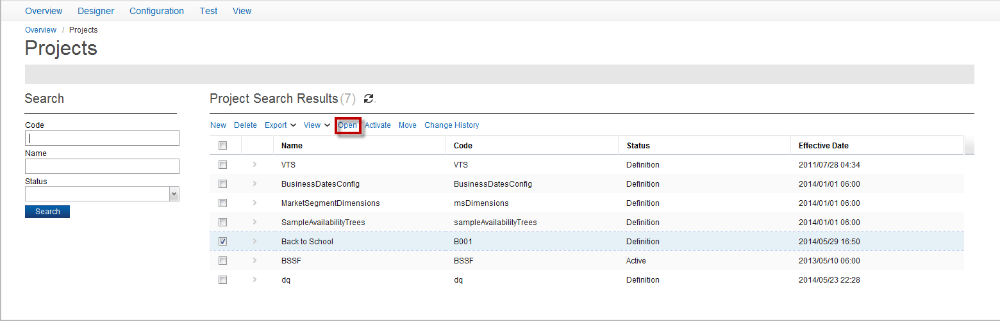
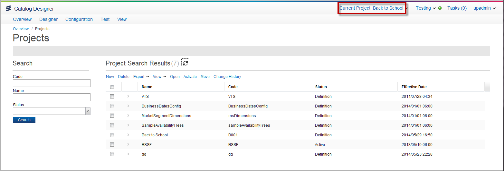

Open a Project
To make changes to the Catalog, you must open a project must be opened in Catalog Designer. Opening a project allows you to add to the Catalog or change the existing Catalog.
To open a project, complete these steps:
- From the menu bar, click the Projects folder icon, and then click Manage. Alternatively, you can click Designer > Projects if you are on a page that has that menu bar available.

- From the Product Search Results page, select the checkbox next to the project that you want and then click Open.

Note: The Open option appears with or without an open project.
- Your project opens. The Project folder icon changes, showing the project name. After you have opened your project, its project name appears in the right part of the menu bar of all Catalog pages. All additions to the Catalog default to this project code.
